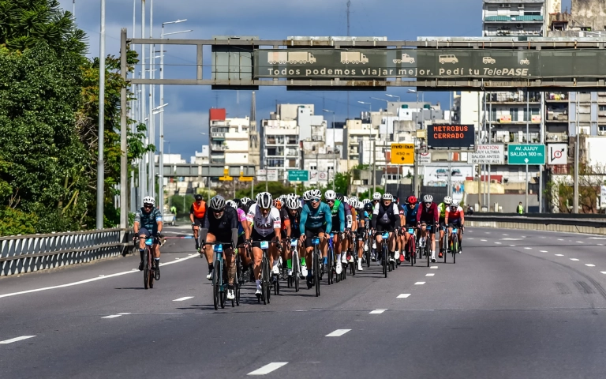

129 km
Gran Fondo
El recorrido largo para quienes quieren un desafío mayor.
CICLISMO EN BUENOS AIRES · EDICIÓN 2026
Una carrera para vivir la ciudad desde la bicicleta, en un circuito cerrado al tránsito.
Domingo 11 de octubre · Desde las 6:00 h
Conocer el evento ↗
01 / EL EVENTO
El Gran Fondo recorre calles y autopistas de Buenos Aires cerradas al tránsito. Hay dos distancias para elegir y actividades en Parque Sarmiento durante los días previos.
129 km
El recorrido largo para quienes quieren un desafío mayor.
46 km
Una distancia más corta para disfrutar la experiencia.
09—10 oct
Acreditación, actividades y propuestas relacionadas con el ciclismo en Parque Sarmiento.
02 / UBICACIÓN
Av. Dr. Ricardo Balbín 4750, Ciudad de Buenos Aires.
La largada y la llegada de la edición 2026 serán en la zona del parque. La acreditación se realiza allí durante la Expo Bici.
Planificá tu viaje con anticipación: el circuito utiliza vías cerradas al tránsito durante la carrera.
Abrir indicaciones en Google Maps ↗03 / DUDAS Y CONTACTO
El domingo 11 de octubre de 2026. La largada comienza a las 6:00 h.
Podés elegir entre un recorrido de 129 km y otro de 46 km.
En la Expo Bici Buenos Aires, en Parque Sarmiento, los días previos a la carrera.
La inscripción se realiza desde el sitio oficial del evento.